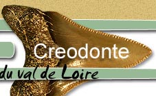
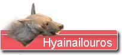
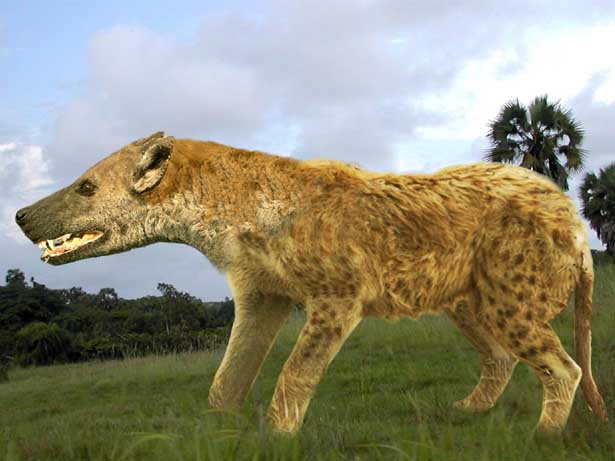

|
  |
||
 |
|
||
 Un fossile parmi les fossiles … Les créodontes se caractérisent par une dentition où les dents carnassières se situent à des endroits variables sur les mâchoires. Ils étaient les prédateurs dominants jusqu'à l'oligocène puis ils ont disparu d'Eurasie avec l'émergence des vrais carnivores. Par contre, en Afrique séparée de l'Eurasie au début du miocène, les créodontes prospéraient en l'absence des carnivores. La matérialisation d'un pont de terre entre l'Eurasie et l'Afrique a été le point de départ de l'éradication progressive des créodontes d'Afrique. Au MN 5, seuls Hyainailouros, un prédateur de taille colossale et Sivanasua, un petit créodonte omnivore avaient su prendre place dans la faune Miocène européenne. La grosse tête … Hyainailouros Sulzeri était un animal énorme. Même l'Amphicyon Giganteus devait être complexé par ce monstre. Il était assez bas sur patte avec une tête démesurée. On parle d'un crâne dépassant les 50 cm! Pourtant la faiblesse du volume crânien laisse soupçonner une intelligence limitée par rapport aux carnivores fissipèdes. Ce devait être des animaux adaptés à la course, ou tout au moins capables de marcher sur de longues distances. Ils ont accompagné les proboscidiens depuis leur migration africaine vers l'Europe. En fait, c'étaient les seuls prédateurs véritablement capables de s'attaquer aux pachydermes. Hyainailouros devait contribuer à la régulation des populations de Gomphotherium s'attaquant aux animaux malades, aux anciens et aux jeunes. Mais surtout la taille énorme de Hyainailouros présentait l'avantage de pouvoir disputer aux autres prédateurs des proies déjà tuées. D'ailleurs, on estime que les organes olfactifs de Hyainailouros étaient assez développés, autorisant une recherche efficace de carcasses. Alors Hyainailouros Sulzeri, charognard ?... Disparu!… Il est encore une fois difficile de déterminer la cause de la disparition définitive de ces animaux. Le facteur limitant de Hyainailouros est certainement son régime strictement carnassier, dont témoigne la spécialisation des dents. Pour autant ce seul facteur ne suffit pas à expliquer l'extinction de l'animal puisque les félins actuels sont dans une situation assez similaire. Par contre, les félins sont aussi des prédateurs extrêmement performants pour la chasse, ce qui n'était sans doute pas le cas du lourd chasseur Hyainailouros. On doit donc parler de la conjonction de plusieurs handicaps qui ont fini par peser sur la survie de l'espèce. 
Jusqu'à lors, Hyainailouros avait dû sa survivance à sa taille considérable qui le mettait à l'abri de la compétition directe des carnivores. Le revers de cette grande taille est la nécessité de trouver des quantités importantes de nourriture. On pense donc que l'animal vivait en solitaire ou en couple occasionnel comme la plupart des gros prédateurs de milieux boisés. Plus le prédateur est grand plus le territoire de chasse est conséquent et plus il faut dépenser d'énergie pour l'arpenter. En cas de disette (raréfaction même momentanée des proies), la densité de population de Hyainailouros Sulzeri était tellement faible que la moindre surmortalité mettait gravement en danger l'espèce. C'est un phénomène classique chez les super-prédateurs. C'est l'un des animaux les plus rares des faluns. |
|||